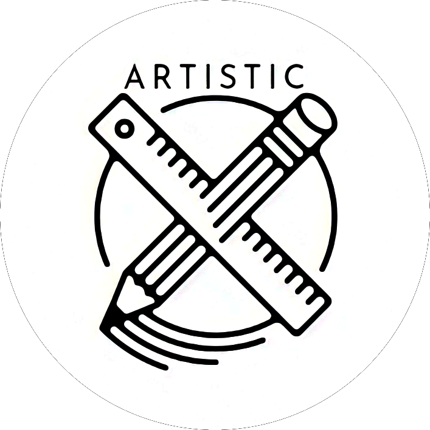

Baca dengan seksama pertanyaan dibawah dan teliti!
Jangan lupa untuk di screenshoot bila lupa karena hanya diperbolehkan membuka satu kali!

PERTANYAAN
DIVISI LIGHTING
Pada lighting, teknik low key light biasanya kerap digunakan pada film?

PERTANYAAN
DIVISI ARTISTIK
Jelaskan secara singkat apa saja bagian-bagian yang termasuk ke dalam artistik?

PERTANYAAN
DIVISI SOUND
Apa yang dimaksud audio mixing?